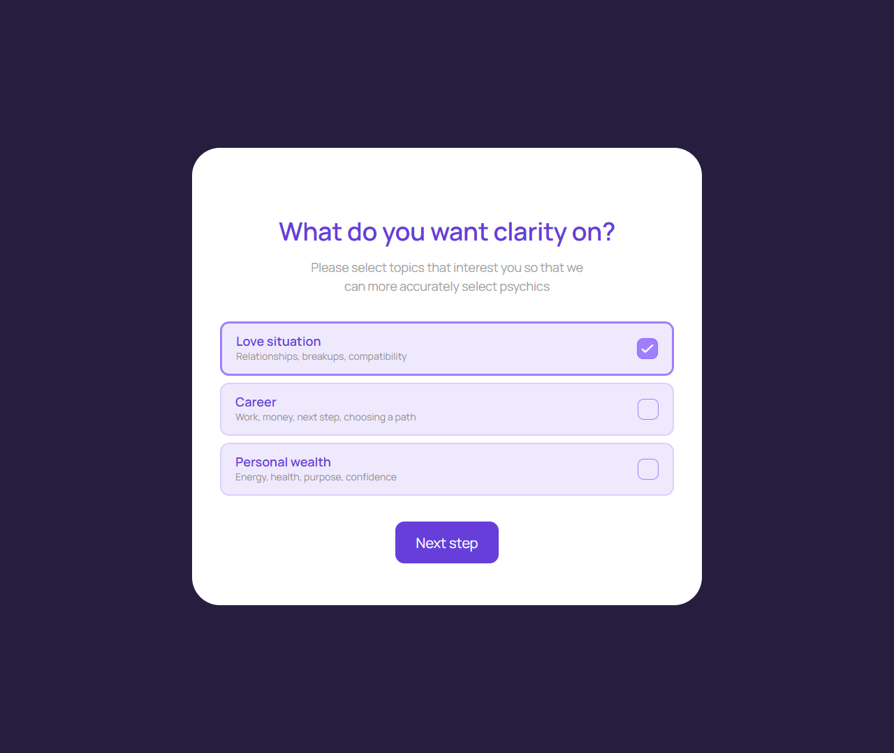
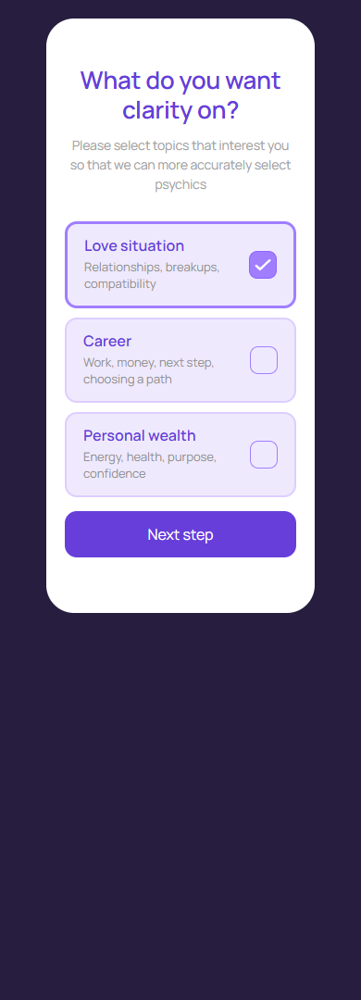

Выбор темы
account/question-topics.html
Зафиксировать запрос пользователя.
| Когда открывается | Вход в подбор |
|---|---|
| Данные | Допустимые темы; выбор; контекст подбора. |
| Сценарий | Выбрать тему → Next → сохранение контекста → следующий шаг onboarding/подбора. |
| Переходы | Астрологические сведения · Подбор эксперта |
Темы интерфейса связываются со справочниками явно; Personal wealth в тексте содержит health и не задает медицинскую услугу.
Общая и предметная логика. Снимки и подписи элементов — исходная редакция макета; поздние уточнения ТЗ имеют приоритет в своей области. Это не проверка текущего сайта.
Сопоставление с AskNebula
Существующие наблюдения 07–09.10.2026, без повторной проверки в этой передаче.
Нужна отдельная сверка соответствующего экрана/состояния референса. Отсутствие аналога не установлено.
Состояние 1280 · 1280 × 1080


Элементы и ожидаемые действия
| Элемент | Название в макете | Действие | Ожидаемый результат |
|---|---|---|---|
| E001 Виден | Love situation Relationships, breakups, compatibility | Выбрать тему вопроса из видимых вариантов. | До Next это локальный выбор; дальнейший подбор использует стабильный ключ темы. |
| E002 Виден | Career Work, money, next step, choosing a path | Продолжить подготовленный сценарий: Выбрать тему → Next → сохранение контекста → следующий шаг onboarding/подбора. | Сохранить выбранные значения после проверки. Не начать тарификацию и не списать бонус. |
| E003 Виден | Personal wealth Energy, health, purpose, confidence | Выбрать тему вопроса из видимых вариантов. | До Next это локальный выбор; дальнейший подбор использует стабильный ключ темы. |
| E004 Виден | Next step | Продолжить подготовленный сценарий: Выбрать тему → Next → сохранение контекста → следующий шаг onboarding/подбора. | Сохранить выбранные значения после проверки. Не начать тарификацию и не списать бонус. |
Состояние 390 · 390 × 1080


Элементы и ожидаемые действия
| Элемент | Название в макете | Действие | Ожидаемый результат |
|---|---|---|---|
| E001 Виден | Love situation Relationships, breakups, compatibility | Выбрать тему вопроса из видимых вариантов. | До Next это локальный выбор; дальнейший подбор использует стабильный ключ темы. |
| E002 Виден | Career Work, money, next step, choosing a path | Продолжить подготовленный сценарий: Выбрать тему → Next → сохранение контекста → следующий шаг onboarding/подбора. | Сохранить выбранные значения после проверки. Не начать тарификацию и не списать бонус. |
| E003 Виден | Personal wealth Energy, health, purpose, confidence | Выбрать тему вопроса из видимых вариантов. | До Next это локальный выбор; дальнейший подбор использует стабильный ключ темы. |
| E004 Виден | Next step | Продолжить подготовленный сценарий: Выбрать тему → Next → сохранение контекста → следующий шаг onboarding/подбора. | Сохранить выбранные значения после проверки. Не начать тарификацию и не списать бонус. |